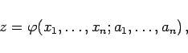
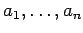
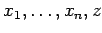
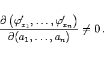
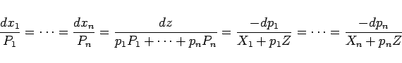
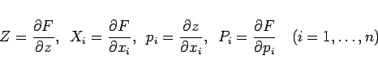
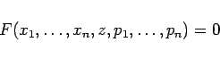

Inhalt Index DeskTop Bronstein

 Differentialgleichungen Partielle Differentialgleichungen Partielle Differentialgleichungen 1. Ordnung Nichtlineare partielle Differentialgleichungen 1. Ordnung
Differentialgleichungen Partielle Differentialgleichungen Partielle Differentialgleichungen 1. Ordnung Nichtlineare partielle Differentialgleichungen 1. Ordnung


Allgemeine Form der partiellen Differentialgleichung 1. Ordnung wird die implizite Gleichung
genannt.
|  | (9.73b) |
die von n Parametern  abhängt und für deren Funktionaldeterminante mit den betrachteten Werten von  gelten muß
|  | (9.73c) |
|  | (9.73d) |
mit
|  | (9.73e) |
zurückgeführt. Die Lösungen des charakteristischen Systems, die die zusätzliche Bedingung
|  | (9.73f) |
erfüllen, heißen charakteristische Streifen.